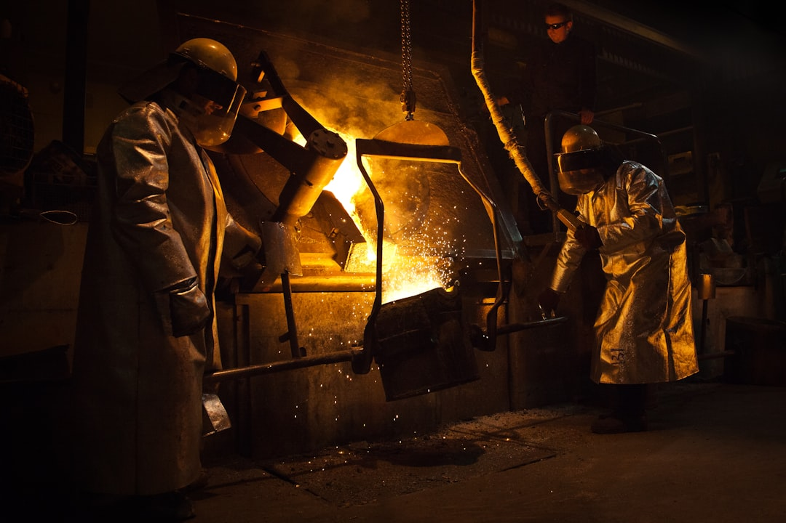

고려아연 갈륨 공장 2028년 가동, 연 15.5t으로 '국내 독점' 설계

고려아연은 2025년 내 갈륨 생산 공장 착공에 들어가 2028년부터 연간 15.5톤 규모로 양산을 시작한다고 공식 발표했다. 이는 현재 한국이 연간 수입하는 갈륨 물량(약 30~40톤 추산)의 40~50%를 국내 생산으로 대체할 수 있는 규모다.
갈륨은 아연 제련 과정에서 부산물로 추출된다. 고려아연은 연간 약 100만 톤의 아연을 처리하는 온산제련소를 운영하고 있어, 갈륨 추출의 원료 확보 측면에서는 구조적 우위를 갖는다. 갈륨 메탈은 GaN(질화갈륨) 전력반도체와 GaAs(갈륨비소) 화합물 반도체의 핵심 소재다.
고려아연은 이미 2023년 중국의 게르마늄 수출 규제(2023년 8월 시행) 이후 게르마늄 국내 생산 라인을 가동해 수입 대체 일부를 실현한 바 있다. 갈륨은 게르마늄보다 응용 범위가 넓어(전력반도체·LED·태양전지·5G RF칩) 전략적 가치가 더 높다.
중국 갈륨 수출 규제는 2023년 8월부터 시행됐으며, 2024년 한 해 동안 중국의 갈륨 수출량은 전년 대비 약 40% 감소한 것으로 알려졌다. 글로벌 갈륨 현물 가격은 규제 이전 kg당 220달러 수준에서 2024년 말 기준 최고 450달러까지 상승했다.
고려아연의 갈륨 15.5톤은 숫자만 보면 소소해 보인다. 하지만 전략적 의미는 다르다. 국내 수요의 절반을 커버할 수 있는 공급자가 한 명이라도 생기는 순간, 협상 구조 자체가 바뀐다. 지금까지 국내 GaN 전력반도체 제조사와 LED 기판 업체들은 중국 단일 공급자에게 100% 의존하는 구조였다. 이 구조에서는 가격 협상도, 납기 협상도 불가능하다.
다만 2028년이라는 타임라인에 주목해야 한다. 현재 미국 국방부(DoD)와 에너지부(DoE)가 갈륨을 포함한 핵심광물 비축 목표를 2026년까지 설정해 두고 있다. 한국이 2028년에 생산을 시작한다면 미국·EU의 공급망 재편이 일단락된 이후 시장에 진입하는 셈이어서, '글로벌 허브' 달성을 위해서는 타임라인 단축 가능성을 검토해야 한다.
고려아연은 갈륨·게르마늄 국내 독점 공급자 지위로 장기 프리미엄 계약 체결 가능성이 높아진다. 삼성전기·LG이노텍(GaAs RF 기판), SK파워텍(GaN 전력반도체) 등이 잠재 국내 수요처이며, 이들은 안정적 공급을 위해 장기계약 프리미엄을 지불할 유인이 있다.
국내 GaN 전력반도체 생태계도 수혜를 입는다. 갈륨 소재 가격과 공급 불안이 해소되면 GaN 기반 전력변환장치(PFC, 온보드 차저) 소재 비용이 낮아져 전기차·데이터센터 전력 모듈 국산화 비율이 높아질 수 있다.
중국 갈륨 수출업체들은 한국 시장 점유율 일부를 상실하게 된다. 한국은 중국 갈륨의 주요 수출 대상국 중 하나로, 연간 30~40톤의 수요가 일부라도 국내 생산으로 대체되면 중국 트레이더들의 수익이 직접 감소한다.
단기적으로는 고려아연 갈륨 공장 완공 전인 2025~2027년 동안 국내 수요 업체들이 높은 현물 가격을 감수해야 하는 기간이 지속된다. 이 기간 동안 갈륨 의존도가 높은 중소 LED 및 화합물 반도체 기업들의 원가 부담이 집중된다.
투자자는 고려아연의 갈륨 프로젝트를 '2028년 매출 반영 이벤트'로만 봐서는 안 된다. 실제 가치는 '갈륨 공급자 지위 확보에 따른 계약 협상력'에 있다. 2026~2027년 장기공급계약(LOI, MOU 단계) 체결 뉴스가 주가 선반영의 핵심 트리거가 될 것이다.
구매담당자라면 지금 당장 2028년 공급 계약의 선점 논의를 시작해야 한다. 공장 완공 이후 접근하면 이미 선점 업체들이 우선 물량을 확보한 상태일 것이다. 연간 15.5톤이라는 한정된 물량은 6~8개 수요처만 충족시킬 수 있는 규모다.
실제 조달 현장에서는 — 갈륨 국내 생산 소식이 나오면 반드시 '순도 스펙' 문제가 따라온다. 중국산 갈륨은 순도 6N(99.9999%) 이상 제품이 표준화되어 있는데, 새로운 공장이 초기부터 이 스펙을 맞출 수 있느냐가 실제 채택의 관건이다. 소재 공급 계약 협상 시 순도·납기·로트 안정성을 함께 검토하라.
이 포스팅은 쿠팡 파트너스 활동의 일환으로 수수료를 제공받습니다.